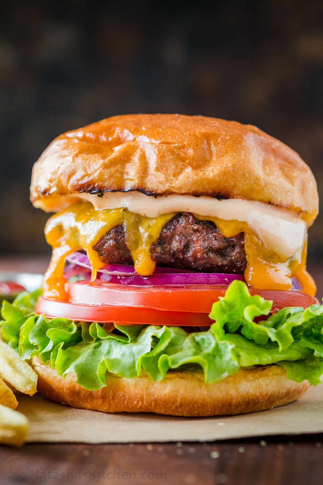

COOKIES FOR DAYS
The Best Chocolate Chip Cookie Recipe
Total Time 30 min Makes 1 dozen

The BEST Chocolate Chip Cookies
I have been deeply invested in creating the best chocolate chip
cookie recipe for over 6 YEARS. And i’m thrilled to say, it is
*finally* absolute perfection. These are the best homemade chocolate
chip cookies, period. Here’s what makes them so great:
- They will work EVERY SINGLE TIME you bake them. There are no failed
attempts here. If you follow this recipe, you can guarantee you will
be eating on of the best cookies of your life in a matter of minutes.
- The flavor does NOT quit. And I’ll tell you the secret reason
why. These cookies are vanilla-forward. So much so that you
might think there is a typo in the recipe. It’s not a typo – the
vanilla really pulls out all of the flavor of the brown sugar,
butter, egg, chocolate chips, etc and makes these the best
chocolate chip cookies.
- They will stay soft and chewy! IMO, these have the best texture
of any chocolate chip cookie ever and they will still have that
texture the next day. These won’t turn into dry bricks and
disappointment when they cool.
- This recipe makes the perfect amount. You’ll end up with a lot
of cookies, but not too much. It’s a win-win.
- Finally, they freeze exquisitely well (both baked and as dough!)
Which means you can essentially have an instant delightful
cookie whenever the fancy strikes. Which, trust me, once you eat
these homemade chocolate chip cookies will be all the time.
Best Chocolate Chip Cookie Recipe Ingredients
- Salted butter, softened – I use salted butter, if using unsalted
butter add an extra pinch or two of salt to the cookie dough.
- Granulated sugar
- Brown sugar
- Egg
- Vanilla extract – No, that isn’t a typo for the vanilla. These
are a vanilla forward cookie and it makes them my FAVORITE ever.
- All-purpose flour – Just regular all-purpose flour works great
- Baking soda
- Salt
-
Favorite chocolate chips – Use whatever chocolate chips are your
favorite or what you have on hand. You can even chop up a
chocolate bar and use it in this recipe. I like ghirardelli
chocolate chips for these!
One Bowl Chocolate Cake
Prep Time:20 mins Cook Time:30 mins
How to Make One-Bowl Chocolate Cake
It truly couldn't be easier to make this chocolate cake — just
combine the ingredients in a mixing bowl and bake! You'll find the
full recipe below, but here's a brief overview of what you can expect:
- Mix the dry ingredients in a large bowl.
- Mix in the eggs, vanilla, and oil on medium speed. Stir in the
boiling water.
- Pour the batter into prepared pans. Bake until a toothpick comes
out clean.
Ingredients
- 2 cups white sugar
- 1 ¾ cups all-purpose flour
- ¾ cup unsweetened cocoa powder
- 1 ½ teaspoons baking powder
- 1 ½ teaspoons baking soda
- 1 teaspoon salt
- 2 large eggs
- 1 cup milk
- ½ cup vegetable oil
- 2 teaspoons vanilla extract
- 1 cup boiling water
Perfect Hamburger Recipe
533kcalcalories 24g carbs 31g protein

Toppings
You want all of your toppings ready to go to assemble the hamburgers
when the patties are hot and ready. Toast the buns and prepare
toppings first, then cook burger patties. When building a perfect
burger, pick toppings that will add appealing texture, color, and
flavor.
- Sliced cheese (our favorite is thick-sliced, medium cheddar)
- Dill pickle slices
- Fresh red onions (or caramelized onions)
- Tomato,
- Green leaf or iceberg lettuce,
- Avocado
- Bacon + pineapple + the BBQ sauce below
- Jalapeños to add some heat
Instructions
- Slice, and prepare all of your burger toppings and sauces.
- Spread the cut-side of the bun with softened or melted butter
and toast the cut side on a skillet or on the grill until golden
brown. You can toast the bun ahead or in the last couple of
minutes with the burgers on the grill. Toasting the bun adds
great flavor and prevents a soggy bun.
- Preheat grill to medium heat. Divide ground beef into 4 portions
and form patties that are about 1/2" thick and 1" wider than the
burger buns. Season patties generously with salt and pepper.
- Grill hamburger patties (indent-side-up) covered for 3-5 min
each side on the grill. Flip burgers when juices are accumulating
on top of the burger and you have a good sear. Apply cheese in
the last 1-2 minutes of grilling then cover with the lid and cook
until the internal temperature of beef reaches 160˚F.